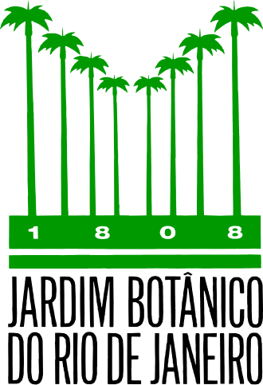
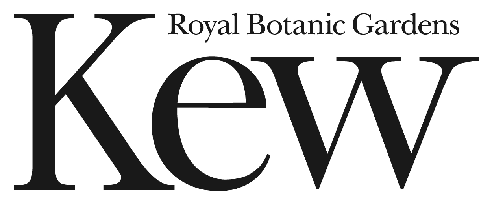

Participating institutions
Empresa Brasileira de Pesquisa Agropecuária (EMBRAPA)
Institut de Recherche pour le Développement (IRD)

Instituto de Pesquisas Jardim Botânico do Rio de Janeiro (JBRJ)

Royal Botanic Gardens, Kew
Serviço Florestal Brasileiro (SFB)
Universidade do Estado de Mato Grosso (UNEMAT – Cáceres)
Universidade Estadual Paulista (UNESP – Rio Claro)
Universidade Federal de Lavras (UFLA)
Universidade Federal de Minas Gerais (UFMG)
Universidade Federal de Pernambuco (UFPE)
Universidade Federal do Ceará (UFC)
Universidade Federal do Vale do São Francisco (UNIVASF)
Università di Torino (UniTO)
University of Exeter